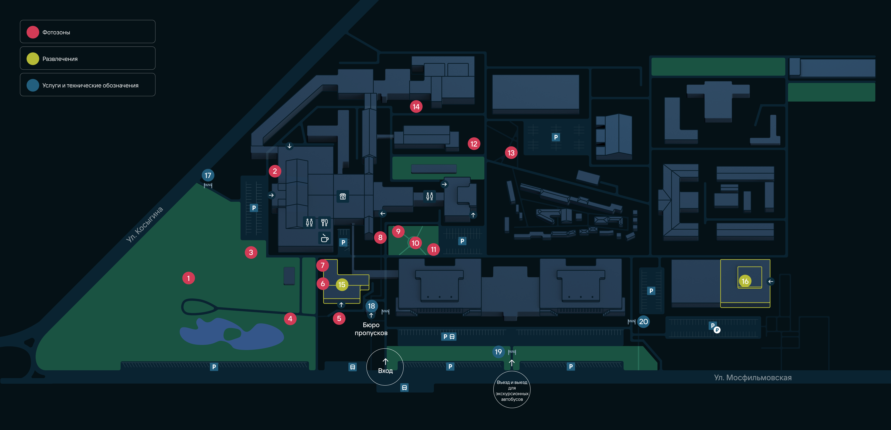

Маршруты и карточки ниже — демонстрационные

Павильон №6
Семь понятных шагов от главного входа до точки внутри здания с переходом GPS → QR.
Сервисы
Что нужно сделать на территории — без поиска по разным страницам.
Схема, избранные объекты и инструкции доступны после первой загрузки. Это концепция, а не обещание готовой инфраструктуры.
Пропуска
Заказ доступен координатору только после входа в портал 1С.
Войдите как координатор
Сервис сначала подтверждает учётную запись в портале 1С и только затем открывает оформление пропусков.
Поля, проверки и согласования показаны как концепция и требуют сверки с процессом Мосфильма.
Что подсказать?
Короткие ответы и маршруты для типовых ситуаций.
На улице сервис использует геопозицию телефона. Внутри здания пользователь сканирует метку и получает точную стартовую точку.
КОНЦЕПЦИЯПавильон №6
Пример карточки объекта: назначение, режим доступа и контактные данные должны загружаться из проверенного источника Мосфильма.
Павильон №6
Сначала GPS ведёт по территории, затем QR-метка задаёт точную позицию внутри здания.
Выйдите от главного входа
Держитесь правой стороны и двигайтесь по основной дороге.
Наведите камеру
на QR-метку
Метка задаёт точную стартовую позицию внутри здания. Камера в прототипе не используется.
Подтвердите доступ
В рабочей версии авторизация открывает портал 1С. Здесь показан безопасный демонстрационный сценарий.
Только прототипНе вводите реальные данные. Связи с 1С и отправки заявок нет.
Найти помещение
Подберите помещение по задаче и отправьте запрос ответственному подразделению.
Порядок действий и получатели заявки — прототипные. Перед запуском требуется согласование.